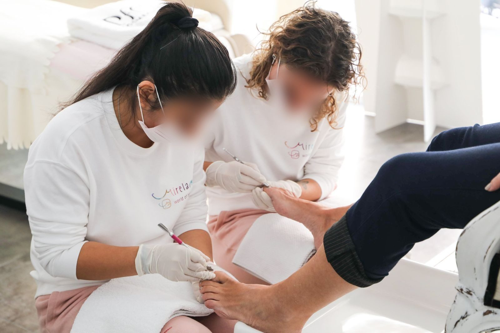
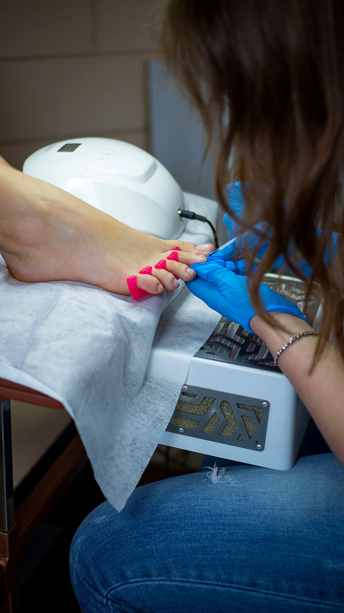
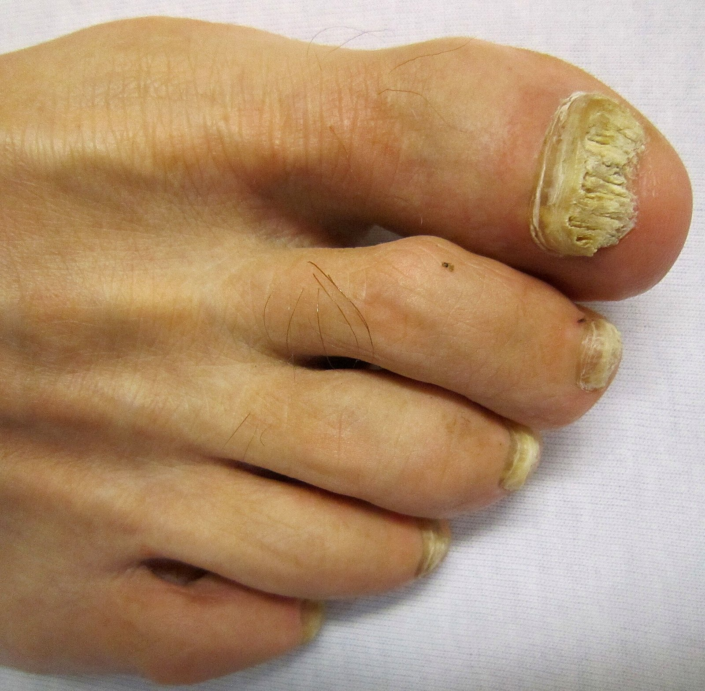
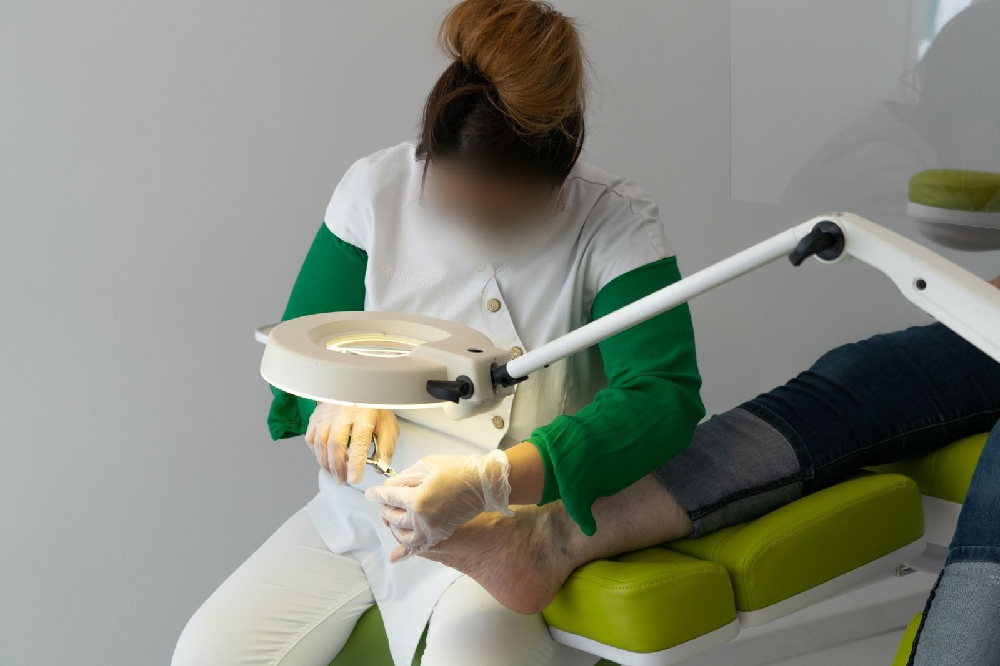
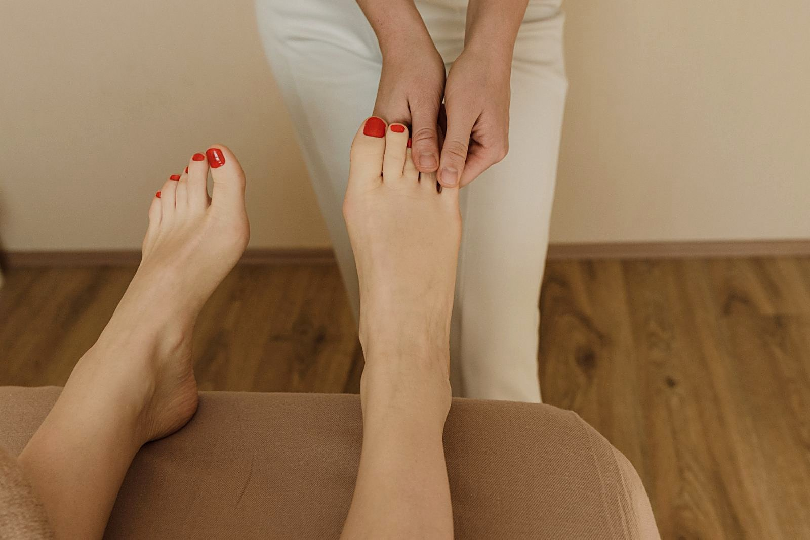
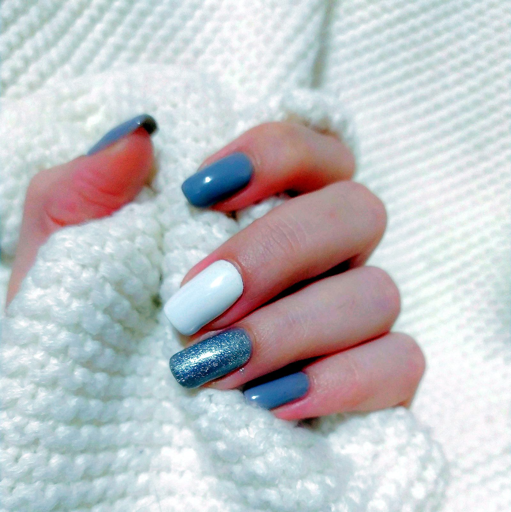

Fungal toenail care, at the shop.
Careful cosmetic care of nails affected by fungus, at the KuuStore shop: gentle cleaning, shaping, and a simple aftercare routine you can actually keep up. You come to us, take the chair, and the care happens here.
Want to spread it out? On services of $35 or more, you can split your payment at checkout with Klarna or Affirm — pay over time instead of all at once, right on the payment page.
Book fungal toenail care
What a visit includes
- A look at each affected nail and a plain-language explanation of what we can and cannot do cosmetically.
- Careful cleaning and shaping with sanitized equipment, opened and prepared in front of you.
- An aftercare kit and routine for Premium visits, written down before we leave.
- Want to walk out looking finished? If you’d like, we can place a cover nail over the treated nail, a fake nail fitted and glued over the top, so you leave with a clean, polished look.
- Honest referral guidance: if a nail needs a doctor or podiatrist instead, we say so.

You don’t have to show the nail while it grows out. After your care, if you want, we can place a cover nail over the treated nail, a fake nail that sits over the top, glued in place, and finish it with polish if you like. The damaged shape stays hidden underneath while your real nail grows out, and you walk out looking done. The cover nail is a $10 add-on per nail. It is cosmetic only: it doesn’t change the nail underneath, and your aftercare routine still applies.
KuuStore provides cosmetic nail care, not medical treatment. We do not diagnose conditions and we do not promise to cure any infection. If you have diabetes, circulation problems, pain, or a nail that is getting worse, see a medical professional first.
What fungal toenail care looks like
If you have toenail fungus, we can get you covered the correct way: the nail is cleaned, shaped and cared for cosmetically, with sanitized equipment and an aftercare routine you can actually keep up. These photos show the condition and the care honestly, educational and clinical imagery, not photos of KuuStore clients, and no photo here is a promised result.




Prices
| Tier | What you get | Service price |
|---|---|---|
| Basic | Antifungal-focused cleaning, shaping and polish | $75-$100 |
| Premium | Full cosmetic restoration visit plus an aftercare kit and routine | $150-$200 |
| Cover nail add-on | A fake nail fitted and glued over a treated nail, finished with polish | $10 per nail |
Exact price inside the range is confirmed at booking, before your card is charged.
Estimates at booking
Your estimate is confirmed when you book. (The travel-fee calculator was removed 2026-11-09: KuuStore beauty services are now come-to-us at the shop.)
Questions
Is fungal toenail care covered by insurance?
We don’t take insurance. You pay KuuStore directly, and you may coordinate with your own provider about reimbursement if your plan allows it for this kind of service.
How long until my nails look better?
Toenails grow slowly, so visible change takes months of steady aftercare, not one visit. Your technician will set honest expectations at the first visit and show you what to watch for. Cosmetic care improves appearance and comfort; it is not a medical cure.
What should I do before the visit?
Have a clean towel, a chair with good light, and bare feet ready. Remove old polish if you can. That’s it: we bring the equipment.
What if I need a doctor instead?
We will tell you plainly and not sell you a visit that won’t help. Pain, swelling, diabetes or circulation issues, and nails that keep worsening belong with a medical professional.
At the nail station


